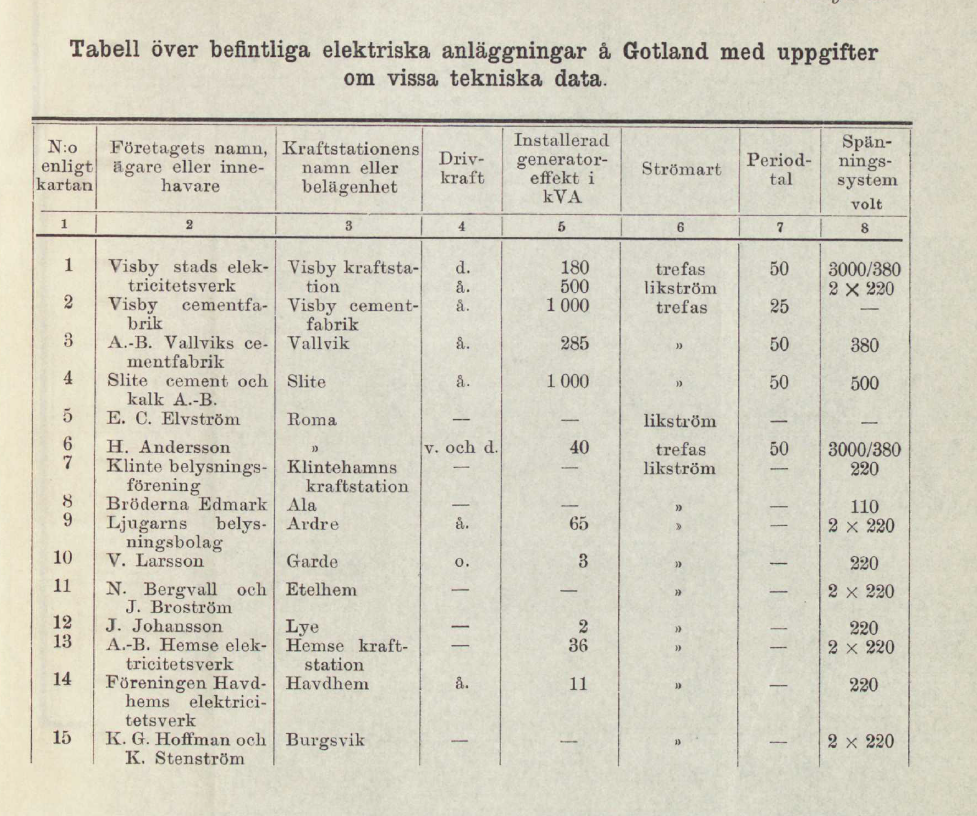
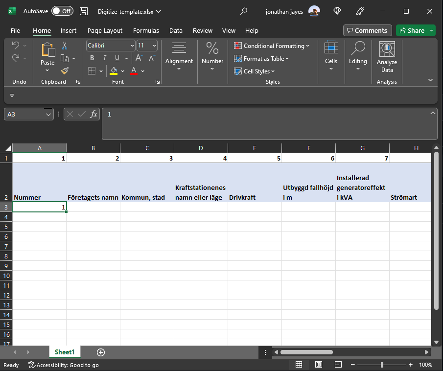
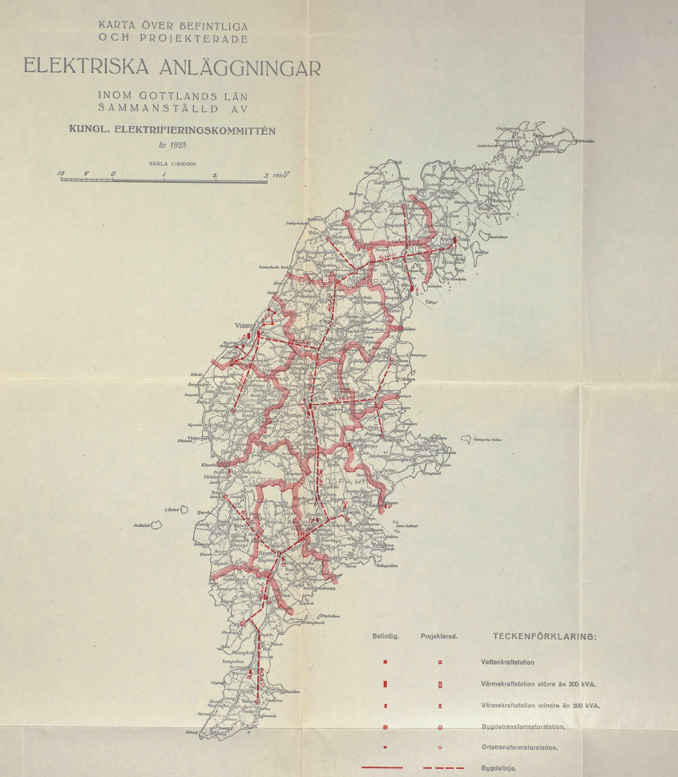

Digitizing the reports of the Swedish Electrification Committee
Purpose
This document is written to explain the important parts of the reports of the Swedish Electrification Committee to digitize.
Introduction
There are reports for 23 län and two summary reports in the folder on dropbox.
The reports for each län on the electrification of rural areas contain:
- Introduction
- Description of current electrical installations
- Description of resources that remain to be tapped
- Analysis of the needs in the county and projection into the future
- Proposal for planned electrification
- Sources of power
- Local distribution
- Costs of electrification
- Summary
At the end of the report is a map of the current distribution and a set of tables reporting the location and details of the power stations.
Completeness
Some of the reports contain less information than others. Specifically, Gotland has less information because it is less electrified.
To digitize
It would be ideal to digitize the table specifying the generation capacity for each power station in the län. These tables are towards the end of each report.
An example is shown below for Gotland:
There is a template in excel for digitizing these tables available for download here
It looks like this:

Maps
Here is an example of a ma containing the generation areas for each power station, as numbered on the tables.
Potentially we could come back to these and extract the boundaries for each generation area.
It does not seem necessary for the moment.
